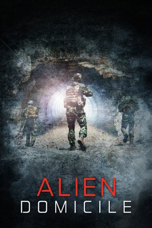

#12137 Alien Domicile
 
 IMDB-Wertung: 3.7 / 10
IMDB-Wertung: 3.7 / 10  Metascore: 0
Metascore: 0 
Nach Jahrzehnten strikter Geheimhaltung und wilder Verschwörungstheorien bestätigt die CIA endlich die Existenz der Militärbasis "Area 51". Was auf dem rätselhaften Gelände vor sich geht, bleibt jedoch nach wie vor streng geheim - bis plötzlich eine bunt gemischte Gruppe aus Militaristen, Staatsbediensteten und Technikern mitten in das unbekannte Areal geschickt wird. Sergeant Ryan Pierce führt seine Spezialeinheit direkt in eine blutige Konfrontation mit etwas unvorstellbar Grauenhaftem.
Jahr: 2017
Dauer: 75 Minuten
FSK: 16
Land: USA Studio: Indie Film FactoryTonspuren:
Untertitel:
Auflösung: 1080p (1920x800) Größe: 3717 MB
Genre: Horror, Sci-Fi
Regisseur: Kelly Schwarze
Drehbuch: Kelly Schwarze
Soundtrack: Eric Rickey, Michael Tushaus
Darsteller:
- Eduard Osipov als Dimitri
- Michael Monteiro als Russell Turner
- Michael Tushaus als Master Sergeant Ryan Pierce
- Ashley Campbell als Adult Emily
- Victoria Viveiros als Soldier 1
- Elly Brown als Hanna
- Sabrina Cofield als Gail Sullivan
- Will Edwards als The Alien
- Paul Tumpson als Soldier 2
Datei: X:\2-Dilogie(A-F)\Alien Domicile\Alien Domicile (2017, FSK16, 1920x800).mkv seit 24.12.2019
Festplatte: HD Collection-2(A-Z)-3(A-M)
 Alle Filme aus Gruppe '2-Dilogie(A-F)\Alien Domicile'
Alle Filme aus Gruppe '2-Dilogie(A-F)\Alien Domicile'